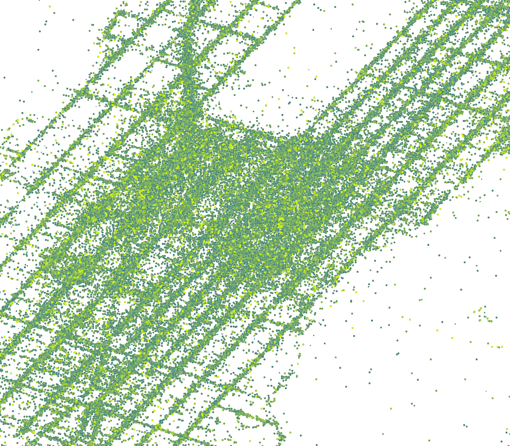
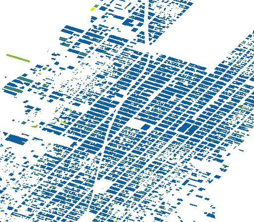
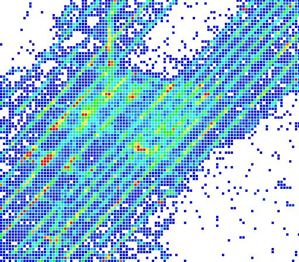

使用 docker 部署 Arctern RESTful Server¶
本文介绍如何使用 docker 部署 Arctern RESTful Server，以及 Arctern RESTful API 的调用示例。
获取 docker 镜像和配置文件¶
获取docker 镜像¶
使用如下命令拉取 docker 镜像：
$ docker pull dragondriver/arctern-0.1.2:latest
$ docker pull dragondriver/arctern-server:latest
如果上述命令耗时过长，请尝试从百度网盘下载镜像压缩文件并手工导入，具体步骤请参考文末的FAQ。
获取docker-compose配置文件¶
使用如下命令下载docker配置文件 docker-compose.yml ，并将配置文件拷贝至部署环境：
$ wget https://gitee.com/dragondriver/arctern-server-resources/raw/master/docker-compose.yml
$ cp docker-compose.yml /your/docker/path/
docker启动配置¶
通过编辑 docker-compose.yml 文件配置端口映射和文件映射，文件内容如下：
version: '2.3'
services:
arctern_zeppelin:
image: dragondriver/arctern-0.1.2:latest
ports:
- "18081:8080"
volumes:
- /path/to/host_data_folder:/data/arctern
restful_server:
image: dragondriver/arctern-server:latest
depends_on:
- arctern_zeppelin
ports:
- "18080:8080"
ports 为端口映射。通过该配置，可以使用宿主机的18080端口访问docker容器中的RESTful服务。
注意 冒号右侧内容为docker容器使用的服务端口，请勿修改。
volumes 为文件目录映射。通过该设置，可以将
宿主机的/path/to/host_data_folder映射到docker容器中的/data/arctern目录,从而实现文件共享。以下示例中均默认docker容器中使用的目录为/data/arctern。
使用示例¶
以下，我们以纽约出租车数据集为例，说明如何通过 Arctern RESTful API 完成数据的导入、数据的处理和数据的可视化渲染。
数据准备¶
执行以下命令下载纽约出租车数据集：
$ cd /path/to/host_data_folder
$ wget https://gitee.com/dragondriver/arctern-server-resources/raw/master/nyc_taxi.csv
执行以下命令查看是否下载成功：
$ wc -l nyc_taxi.csv
该数据集包含 2009 年纽约市出租车的部分运营记录，各字段的含义如下：
| 名称 | 含义 | 类型 |
|---|---|---|
| VendorID | 运营商名称 | string |
| tpep_pickup_datetime | 上车时间 | string |
| tpep_dropoff_datetime | 下车时间 | string |
| passenger_count | 乘客数量 | long |
| trip_distance | 行程距离 | double |
| pickup_longitude | 上车地点的经度 | double |
| pickup_latitude | 上车地点的纬度 | double |
| dropoff_longitude | 下车地点的经度 | double |
| dropoff_latitude | 下车地点的纬度 | double |
| fare_amount | 行程费用 | double |
| tip_amount | 小费 | double |
| total_amount | 总费用 | double |
| buildingid_pickup | 上车地点所在建筑的 id | long |
| buildingid_dropoff | 下车地点所在建筑的 id | long |
| buildingtext_pickup | 上车地点所在建筑的轮廓描述 | string |
| buildingtext_dropoff | 下车地点所在建筑的轮廓描述 | string |
注意： 该数据集有 115927 行，其中时间格式为：
yyyy-MM-dd HH:mm::ss XXXXX，如“2009-04-12 03:16:33 +00:00”。
安装Client端依赖¶
本文示例代码使用 Python 的 requests 库调用 Arctern RESTful API，执行以下命令安装 requests：
$ pip install requests
注意 在后续步骤中，请将
requests调用中url的 IP 和端口替换为 docker 宿主机相应的 IP 和端口。
数据导入¶
使用 /loadfile 接口导入纽约出租车数据集，将其对应的数据表命名为 raw_data。
>>> import requests
>>> import json
>>> docker_data_path="/data/arctern/nyc_taxi.csv"
>>> payload = {
... "tables": [
... {
... "name": "raw_data",
... "format": "csv",
... "path": docker_data_path,
... "options": {
... "header": "True",
... "delimiter": ","
... },
... "schema": [
... {"VendorID": "string"},
... {"tpep_pickup_datetime": "string"},
... {"tpep_dropoff_datetime": "string"},
... {"passenger_count": "long"},
... {"trip_distance": "double"},
... {"pickup_longitude": "double"},
... {"pickup_latitude": "double"},
... {"dropoff_longitude": "double"},
... {"dropoff_latitude": "double"},
... {"fare_amount": "double"},
... {"tip_amount": "double"},
... {"total_amount": "double"},
... {"buildingid_pickup": "long"},
... {"buildingid_dropoff": "long"},
... {"buildingtext_pickup": "string"},
... {"buildingtext_dropoff": "string"}
... ]
... }
... ]
... }
>>>
>>> r = requests.post(url="http://127.0.0.1:18080/loadfile", headers={"Content-Type": "application/json"}, data=json.dumps(payload))
>>> r.json()
{
'code': 200,
'message': 'load table successfully!',
'status': 'success'
}
查询数据表信息¶
你已经在后台创建了一张名为 raw_data的数据表。接着，使用 /table/schema 接口可查询该表中各字段的名称以及对应的数据类型。
>>> import requests
>>> r = requests.get(url="http://127.0.0.1:18080/table/schema?table=raw_data")
>>> r.json()
{
"code": 200,
"schema": [
{
"col_name": "VendorID",
"data_type": "string"
},
{
"col_name": "tpep_pickup_datetime",
"data_type": "string"
},
{
"col_name": "tpep_dropoff_datetime",
"data_type": "string"
},
{
"col_name": "passenger_count",
"data_type": "bigint"
},
{
"col_name": "trip_distance",
"data_type": "double"
},
{
"col_name": "pickup_longitude",
"data_type": "double"
},
{
"col_name": "pickup_latitude",
"data_type": "double"
},
{
"col_name": "dropoff_longitude",
"data_type": "double"
},
{
"col_name": "dropoff_latitude",
"data_type": "double"
},
{
"col_name": "fare_amount",
"data_type": "double"
},
{
"col_name": "tip_amount",
"data_type": "double"
},
{
"col_name": "total_amount",
"data_type": "double"
},
{
"col_name": "buildingid_pickup",
"data_type": "bigint"
},
{
"col_name": "buildingid_dropoff",
"data_type": "bigint"
},
{
"col_name": "buildingtext_pickup",
"data_type": "string"
},
{
"col_name": "buildingtext_dropoff",
"data_type": "string"
}
],
"status": "success",
"table": "raw_data"
}
绘制带权点图¶
使用 /weighted_pointmap 接口根据乘客的上车地点绘制带权点图。其中，将总费用作为点的权重 —— 总费用越高，权重越大，点的颜色越深。带权点图的具体参数说明请参见带权点图 RESTful API 说明。
>>> import requests
>>> import json
>>>
>>> payload = {
... "input_data": {
... "points": "ST_Point(raw_data.pickup_longitude, raw_data.pickup_latitude)",
... "color_weights": "raw_data.fare_amount",
... "size_weights": "raw_data.total_amount"
... },
... "params": {
... "width": 1024,
... "height": 896,
... "bounding_box": [
... -73.998427,
... 40.730309,
... -73.954348,
... 40.780816
... ],
... "opacity": 1.0,
... "coordinate_system": "EPSG:4326",
... "size_bound": [0, 10],
... "color_bound": [0, 20],
... "color_gradient": ["#115f9a", "#d0f400"]
... }
... }
>>>
>>> r = requests.post(url="http://127.0.0.1:18080/weighted_pointmap", headers={"Content-Type": "application/json"}, data=json.dumps(payload))
>>>
>>> import base64
>>> with open("/tmp/weighted_pointmap.png", "wb") as f:
... f.write(base64.b64decode(r.json()['result']))
带权点图的绘制结果如下：
。
绘制热力图¶
使用 /heatmap 接口根据乘客的下车地点以及行程费用绘制热力图。其中，费用高的区域为红色，费用低的区域为绿色。热力图的具体参数说明请参见 热力图 RESTful API 说明。
>>> import requests
>>> import json
>>>
>>> payload = {
... "input_data": {
... "points": "ST_Point(raw_data.pickup_longitude, raw_data.pickup_latitude)",
... "weights": "raw_data.fare_amount"
... },
... "params": {
... "width": 512,
... "height": 448,
... "bounding_box": [
... -74.01556543545699,
... 40.69354738164881,
... -73.9434424136598,
... 40.780921656427836
... ],
... "coordinate_system": "EPSG:4326",
... "map_zoom_level": 10,
... "aggregation_type": "sum"
... }
... }
>>>
>>> r = requests.post(url="http://127.0.0.1:18080/heatmap", headers={"Content-Type": "application/json"}, data=json.dumps(payload))
>>>
>>> import base64
>>> with open("/tmp/heatmap.png", "wb") as f:
... f.write(base64.b64decode(r.json()['result']))
热力图的绘制结果如下：
绘制轮廓图¶
使用 /choroplethmap 接口，根据下车地点的建筑物、小费金额绘制轮廓图。其中，小费金额高的区域为黄色，小费金额低的区域为蓝色。轮廓图的具体参数说明请参见轮廓图 RESTful API 说明。
>>> import requests
>>> import json
>>>
>>> payload = {
... "input_data": {
... "region_boundaries": "ST_GeomFromText(raw_data.dropna().buildingtext_pickup)",
... "weights": "raw_data.dropna().fare_amount"
... },
... "params": {
... "width": 512,
... "height": 448,
... "bounding_box": [
... -74.00235068563725,
... 40.735104211264684,
... -73.96739189659048,
... 40.77744332808598
... ],
... "coordinate_system": "EPSG:4326",
... "color_gradient": [
... "#115f9a",
... "#d0f400"
... ],
... "color_bound": [
... 0,
... 15
... ],
... "opacity": 1,
... "aggregation_type": "mean"
... }
... }
>>>
>>> r = requests.post(url="http://127.0.0.1:18080/choroplethmap", headers={"Content-Type": "application/json"}, data=json.dumps(payload))
>>>
>>> import base64
>>> with open("/tmp/choroplethmap.png", "wb") as f:
... f.write(base64.b64decode(r.json()['result']))
轮廓图的绘制结果如下：

绘制渔网图¶
使用 /fishnetmap 接口根据乘客的上车地点绘制渔网图。其中，将总费用作为渔网网格的权重 —— 总费用越高，权重越大，渔网网格的颜色越深。渔网图的具体参数说明请参见渔网图 RESTful API 说明。
>>> import requests
>>> import json
>>>
>>> payload = {
... "input_data": {
... "points": "ST_Point(raw_data.pickup_longitude, raw_data.pickup_latitude)",
... "weights": "raw_data.fare_amount"
... },
... "params": {
... "width": 512,
... "height": 448,
... "bounding_box": [
... -73.998427,
... 40.730309,
... -73.954348,
... 40.780816,
... ],
... "opacity": 1,
... "coordinate_system": "EPSG:4326",
... "cell_size": 4,
... "cell_spacing": 1,
... "color_gradient": [
... "#115f9a",
... "#d0f400"
... ],
... "aggregation_type": "sum"
... }
... }
>>>
>>> r = requests.post(url="http://127.0.0.1:18080/fishnetmap", headers={"Content-Type": "application/json"}, data=json.dumps(payload))
>>>
>>> # 保存为 PNG 图片
>>> import base64
>>> with open("/tmp/fishnetmap.png", "wb") as f:
... f.write(base64.b64decode(r.json()['result']))
渔网图的绘制结果如下：

FAQ¶
镜像拉取和数据文件下载速度太慢怎么办?¶
请尝试从百度网盘下载镜像和其他相关文件。分享链接和提取码为 链接: https://pan.baidu.com/s/1dAudI5c8Rn6_FPxbUdUG_g 提取码: buuj
镜像压缩文件分别为arctern-server.tgz 和 arctern-0.1.2.tgz，下载完成后请使用如下命令解压:
$ tar -zxf arctern-server.tgz
$ tar -zxf arctern-0.1.2.tgz
解压后得到的 arctern-server.tar 和 arctern-0.1.2.tar 即为 docker镜像。
可使用以下命令将docker镜像导入到部署环境的本地仓库:
$ docker load < arctern-server.tar
$ docker load < arctern-0.1.2.tar